Screenshots
Note that some of the icons, along with the logo I've chosen, are images co-opted and hand-edited from
RedHat's Bluecurve icon set in RH9. It would be cool if I had mad
graphic artist skillz, but I don't. Please forgive me.
The outputs have been renamed in these screenshots, from "left" and "right", to "main" and "backup". Astute readers
will also notice the background images on the more recent versions. I chose this image because it's easy to tell if
the image isn't being drawn correctly or the alpha on the widgets isn't working like it should. I'm sorry, I can't
remember where I downloaded this image from, but it's pretty damn cool, being a closeup of cauliflower.
All thumbnails are 300x200 and are under 20k in size. The screenshots themselves are either fullsize 1024x768 (100k
each) or reduced to 800x600 (under 50k).
| 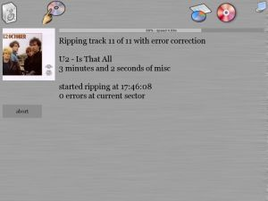 |
| 40,702 bytes |
This is the new ripping screen, which has been simplied quite a bit from the previous version. It includes
a progress bar and a ripping speed measurement.
| 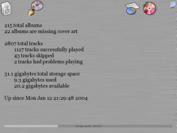 |
| 45,971 bytes |
The new stats screen can be viewed by hitting the little pie chart icon up in the right.
Screenshots from previous versions
| 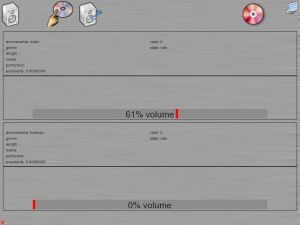 |
| 51,837 bytes |
This is the "now playing" screen. Up to two defined outputs will show up here. The entire layout has changed
to better accomidate incremental updating. The track info is temporary, just a dump of the data I have until
I change it to be more visually appealing.
| 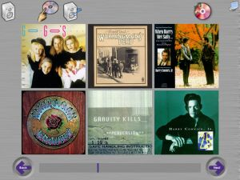 |
| 104,800 bytes |
This shot boasts the addition of the album navigation slider between the next and back buttons.
| 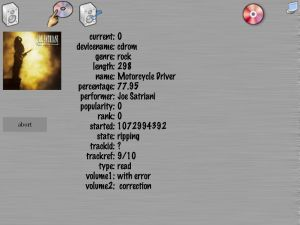 |
| 63,075 bytes |
The expanding ripping screen which shows the cover art for the album being ripped if it can find it.
Note that this is also just a dump of the information, to be expanded upon later.
One thing you can't see in these screenshots is the support for animated icons. If there is something queued up and
playing, the "now playing" icon (upper left) has musical notes coming out of it. If the ripper is currently active
musical notes flash over its icon (the red colored CD in the upper right).
| 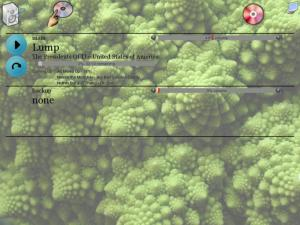 |
| 101,210 bytes |
This is the "now playing" or "idle" screen. If there are multiple outputs defined, they all show up here.
Changes from the previous version include the volume bar, the pause/play button, and the skip button.
| 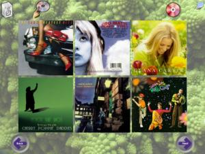 |
| 111,133 bytes |
Not much has changed with the album screen since the previous version.
| 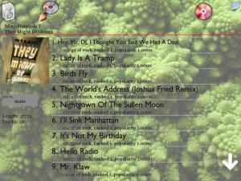 |
| 126,680 bytes |
The main difference here is that the scroll buttons disappear when the list is positioned at the
top or the bottom.
| 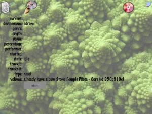 |
| 103,715 bytes |
Here you can see the start of the new "ripping progress" screen, which I've split into it's own
page rather than trying to bunch everything up on the "now playing" page.
The latest version has a static icon bar across the top containing three icons. On the left is the
"now playing" icon, which will take you to the "now playing" screen. In the middle is the "album picker"
icon, which shows the list of all albums. The screen saver can be manually activated using the icon on the
right.
Note that the references to "left" and "right" in the screenshots designate one of the multiple output
channels that are supported. I had my two sets of speakers set up on the left and right of myself for
testing. In my production setting, I plan on having at least two outputs, "kitchen" and "pool room",
and perhaps "library" as a third, as my house is already wired with (cheap-ass) speakers (that need to
be replaced).
| 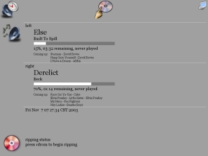 |
| 41,545 bytes |
This is the "now playing" screen. If there are multiple outputs defined, they all show up here.
You can also elect to rip additional discs that you own from this screen.
| 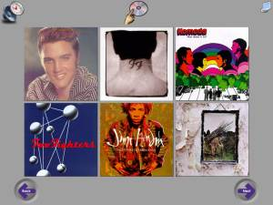 |
| 96,441 bytes |
This screen shows a scrolling list of albums, six at a time. Selecting an album lists the tracks on that album.
| 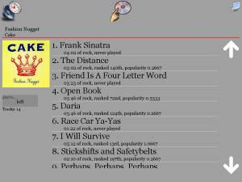 |
| 74,048 bytes |
The tracks on the album are displayed in a scrolling list. Statistics for the album and each track are included.
The output is selectable on the left.
Older Screenshots
| 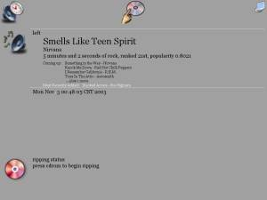 |
| 35,524 bytes |
An older version of the "now playing" screen, before I added the progress meter.
{kind=link}
{kind=link}
{kind=link}
{kind=link}
{kind=link}
{kind=link}
{kind=link}
{kind=link}
{kind=link}
{kind=link}
{kind=link}
{kind=link}
{kind=link}